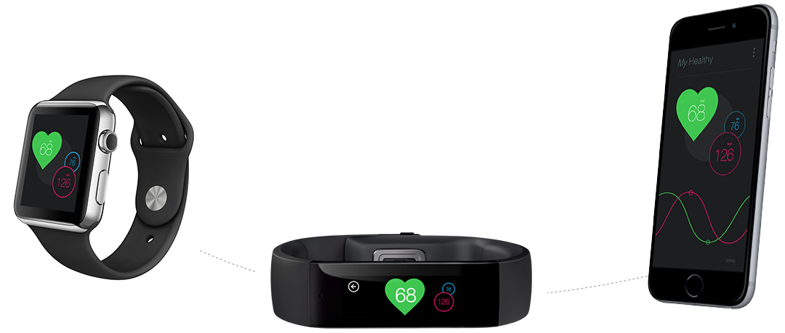
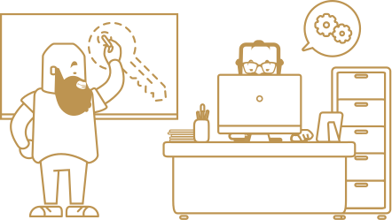

Probablemente es la parte más crítica del proceso. No entendemos el diseño sin que estas tres capas avancen juntas.
Y avanzar significa entender un problema, explorar soluciones, acertar y equivocarse, y volver a empezar
¿Sabías que Secuoyas empezó siendo un estudio de animación? Hoy somos uno de los principales referentes de diseño digital en la industria
Es así como ocurren las cosas, especialmente en este sector. Necesitamos una forma de trabajar que permita anticipar la salida de un producto al mercado e iterar y evoluicionar con el.
“Llámalo lean, llámalo agile, lo que parece obvio es que el mercado digital impone un ritmo que exige otra forma de pensar y de construir un producto. Como equipo de diseño esto también nos ha obligado a cambiar”
Daniel Serrano
Chief Experience Officer
Para nosotros ha sido una evolución natura. La calidad que le exigimos a nuestros proyectos pasa por tener equipos con dedicación completa durante todo el proceso.
Conoce al equipoSensores, datos, dispositivos, componentes… el mundo conectado da un paso más y nos enfrentamos a un nuevo paradigma tecnológico: IoT (internet of things).
Apostamos por el diseño estratégico como herramienta para comprender estos nuevos escenarios y aportar valor a través de nuevos productos digitales, servicios e interfaces de usuario.
Sensores, datos, dispositivos, componentes… el mundo conectado da un paso más y nos enfrentamos a un nuevo paradigma tecnológico: IoT (internet of things).
Apostamos por el diseño estratégico como herramienta para comprender estos nuevos escenarios y aportar valor a través de nuevos productos digitales, servicios e interfaces de usuario.
Sensores, datos, dispositivos, componentes… el mundo conectado da un paso más y nos enfrentamos a un nuevo paradigma tecnológico: IoT (internet of things).
Apostamos por el diseño estratégico como herramienta para comprender estos nuevos escenarios y aportar valor a través de nuevos productos digitales, servicios e interfaces de usuario.
Sensores, datos, dispositivos, componentes… el mundo conectado da un paso más y nos enfrentamos a un nuevo paradigma tecnológico: IoT (internet of things).
Apostamos por el diseño estratégico como herramienta para comprender estos nuevos escenarios y aportar valor a través de nuevos productos digitales, servicios e interfaces de usuario.
Sensores, datos, dispositivos, componentes… el mundo conectado da un paso más y nos enfrentamos a un nuevo paradigma tecnológico: IoT (internet of things).
Apostamos por el diseño estratégico como herramienta para comprender estos nuevos escenarios y aportar valor a través de nuevos productos digitales, servicios e interfaces de usuario.
“Llámalo lean, llámalo agile, lo que parece obvio es que el mercado digital impone un ritmo que exige otra forma de pensar y de construir un producto. Como equipo de diseño esto también nos ha obligado a cambiar”
Henar Vega
Senior UX Designer
Experienciea de usuario
Diseño visual
Investigación
Diseño de producto
Estrategia de contenidos
Diseño de servicios
Estrategia de producto digital
Tecnología
Comunicación y branding
Multidispositivo
Analítica web, SEO y SEM
Marketing digital